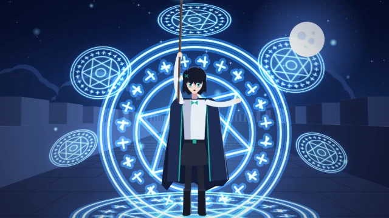
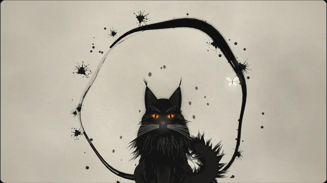
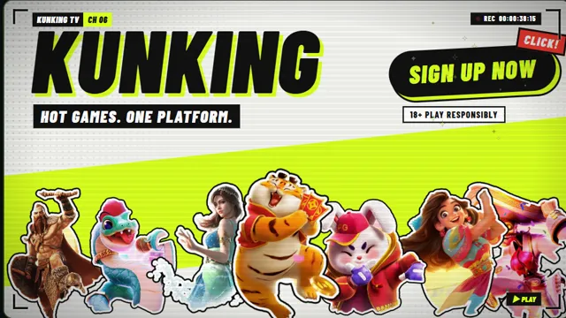
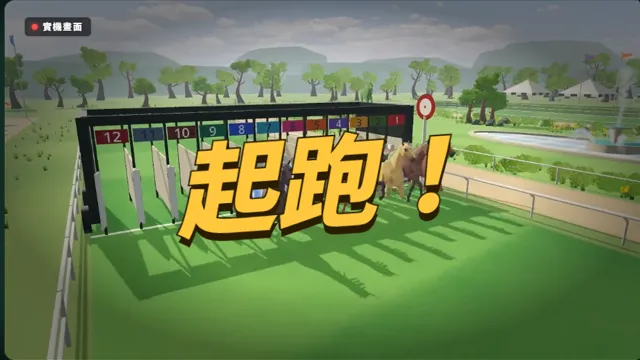
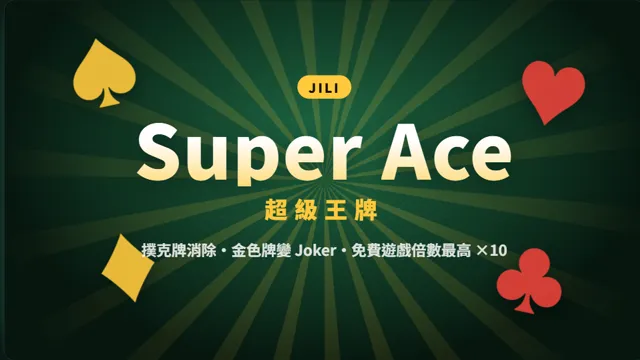

All pages
所有頁面
-

NEW 戰鬥場景原創動畫戰鬥短片：夜裡的石橋上，術師對上操控紅綢的面具術士，閃白、甩鏡、追著光束的鏡頭，25 秒，畫面全由程式繪製 -

貓抓蝴蝶水墨短片：霧裡走出一隻長毛黑貓，追一隻發光的白蝴蝶，15 秒；毛是數千撮筆觸、墨是 WebGL 即時模擬的流體 -

KUNKING 站點預告角色登場卡、電視牆實機畫面、原創賽馬，最後收在註冊，40 秒，全英文 - 註冊 推廣頁46 秒推廣動畫，加上熱門遊戲、活動、站點特色、極速充提與註冊
- 遊戲介紹精選輪播、每款遊戲的玩法與規格、遊戲庫、常見問題
-

賽馬介紹動畫極速賽馬：賽程節奏、三個盃賽與玩法，穿插實機畫面 -

老虎機介紹動畫Super Ace、Piñata Wins、麻將胡了2，可切換遊戲 - Banner 實驗台一張主視覺疊上光束、粒子與轉場，每一層都能開關比較